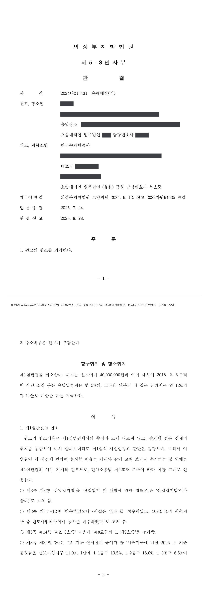

환매권 통지의무 위반을 이유로 한 손해배상 청구소송 (1·2심)
의정부지방법원 고양지원 2023가단64535 · 의정부지방법원 2024나213431 · 담당변호사 부효준
판결문


사건의 요지
공익사업을 위해 취득한 토지에 관하여 환매권 발생 사실을 통지하지 않았다는 이유로 제기된 손해배상 청구에서, 환매권의 발생 요건과 손해의 인정 여부가 다투어진 사건입니다.
사건의 주요 내용
피고는 2008년 3월 국가산업단지 개발사업 가운데 2단계 개발사업의 시행자로 지정·고시된 사업시행자입니다. 원고 소유의 토지 20필지는 2008년 9월 이 개발사업 구역에 편입되었고, 피고는 구 산업입지법 제22조에 따라 2010년 11월과 12월에 14필지를 협의취득하고 2012년 2월 나머지 6필지를 수용하였습니다. 개발사업의 실시계획은 2011년 9월 승인·고시되었으며, 사업기간은 2015년 12월 '2007~2022년'에서 '2007~2030년'으로 변경·고시되었습니다.
피고는 사업구역을 동측·남측·서측지구로 나누어 2011년 11월 동측지구, 2017년 3월 남측지구에서 공사를 시작하였습니다. 원고의 토지는 서측지구에 속하는데, 1심 변론종결 당시까지 서측지구에서는 공사가 시작되지 않은 상태였습니다(2021년 12월 기준 실시설계 중). 항소심에서는 2023년 3월 서측지구 가운데 선도사업지구에서 공사가 시작되었고, 2025년 2월 기준 서측지구의 공정률이 선도사업지구 11.0%, 1단계 1-1공구 13.5%, 1-2공구 18.6%, 1-3공구 6.6%에 이른 사실이 추가로 인정되었습니다.
원고는 피고가 취득일부터 5년 안에 취득한 토지 전부를 사업에 이용하지 않아 환매권이 발생하였는데도 이를 통지하지 않아 환매권을 행사하지 못하였다고 주장하면서, 손해배상의 일부로 4,000만 원과 지연손해금을 청구하였습니다. 부효준 변호사는 1심과 항소심에서 피고 사업시행자를 대리하였습니다.
원고의 주장
- 피고가 취득일부터 5년 이내에 취득한 토지의 전부를 해당 사업에 이용하지 않았으므로 토지보상법 제91조 제2항에 따라 환매권이 발생하였고, 사업시행자인 피고가 이를 지체 없이 통지하지 않아 환매권을 행사하지 못하였으므로 그 손해를 배상하여야 한다고 주장하였습니다.
- 원고의 토지는 공사가 시작된 동측·남측지구와 '일단의 토지'에 해당하지 않으며, '일단의 토지' 개념을 확대하여 해석하는 것은 환매권을 보장하는 입법취지를 묵살하는 행정편의적 해석이라고 주장하였습니다.
부효준 변호사의 주장
- 동측·남측·서측지구는 하나의 개발사업 계획에 따라 순차적으로 공사가 진행되고 있는 '일단의 토지'이므로, 서측지구에서 공사를 시작하지 않았다는 점만으로 취득한 토지 전부를 사업에 이용하지 않았다고 볼 수 없다고 반박하였습니다. 아울러 서측지구에 대하여도 이용행위가 있었다는 점을 주장하였습니다.
- 항소심에서는 1심 뒤 서측지구 선도사업지구에서 실제로 공사가 시작된 사실과 공구별 공정률을 증거(을 제8호증의 1, 제9호증)로 제출하여, 서측지구의 사업이 별개의 사업이 아니라 단계별 조성계획에 따라 뒤늦게 착공된 같은 개발사업의 일부임을 밝혔습니다.
법원의 판단
1심은 토지보상법 제91조 제2항의 취지(사업시행자가 실제로 이용하지 않을 토지를 미리 취득하여 두는 것을 막으려는 것), 토지 전부를 이용하지 않았는지는 사업시행자의 입장에서 그 공익사업에 이용될 일단의 토지 전부를 기준으로 판단하고 소유자나 필지별로 판단하지 않는다는 점, '해당 사업'은 협의취득 등의 목적이 된 구체적인 특정 공익사업을 말한다는 점을 판단 기준으로 삼았습니다.
그에 따라 1심은 이 개발사업 전체가 '해당 사업'이고, 사업구역이 55.585㎢로 넓고 지구들이 서로 떨어져 있기는 하지만 녹지 비중이 71.9%(공공용지인 녹지 49.2%)에 이르고 지구가 떨어진 것은 천연기념물 보호구역의 존재에 기인하는 바가 크다는 점, 산업입지법상 '산업단지'는 포괄적 계획에 따라 지정·개발되는 일단의 토지로서 그 개념은 기능적 관점에서 파악해야 한다는 점, 사업기간이 2007년부터 2030년까지이고 2011년부터 순차로 공사가 진행되고 있는 점을 들어 토지 전부를 이용하지 않은 때에 해당하지 않는다고 보아 청구를 받아들이지 않았습니다.
항소심은 1심 판결을 인용하면서 대법원 판례(1995. 8. 25. 선고 94다41690 판결, 1996. 2. 9. 선고 94다46695 판결)를 명시하고, 서측지구의 착공과 공정률을 추가로 인정하였습니다. 그리고 동측·남측·서측지구가 각각의 특색을 가지고 전체를 이루는 하나의 개발사업으로서 단계별 조성계획에 따라 동측·남측·서측 순으로 공사가 진행되어 서측지구의 착공이 늦어진 것일 뿐, 서측지구의 사업이 독립된 별개의 사업이라고 볼 수 없고 피고가 이용하지도 않을 토지를 미리 취득하였다고 보기도 어렵다고 판단하여 원고의 항소를 받아들이지 않았습니다. 항소비용은 원고가 부담합니다.
토지보상법 제91조 제2항이 취득일로부터 5년 이내에 취득한 토지의 전부를 해당 사업에 이용하지 아니한 때에도 취득일 당시의 토지소유자 등이 그 토지를 매수할 수 있는 환매권을 행사할 수 있도록 규정을 둔 취지는, 사업시행자가 공익사업에 필요하여 취득한 토지가 그 공익사업의 폐지·변경 등의 사유로 공익사업에 이용할 필요가 없게 된 것은 아니라고 하더라도, 사실상 그 토지 전부를 공익사업에 이용하지 아니할 것이면서도 그 토지를 미리 취득하여 둘 수 있게 허용하는 것은 토지보상법에 따라 토지를 취득할 수 있도록 인정한 원래의 취지에 어긋날 뿐 아니라, 토지가 이용되지 아니한 채 방치되는 결과가 되어 사회경제적으로도 바람직한 일이 아니기 때문에, 취득한 토지가 공익사업에 이용할 필요가 없게 되었을 때와 마찬가지로 보아 환매권의 행사를 허용하려는 것이다.
의정부지방법원 고양지원 2023가단64535 판결 이유 '2. 나. 법리 1)' (의정부지방법원 2024나213431 판결이 인용)
이 사건 개발사업계획은 산업입지법에 근거를 두고 있다. 산업입지법 제2조 제8호에 의하면 산업단지란 산업시설과 이와 관련된 교육ㆍ연구ㆍ업무ㆍ지원ㆍ정보처리ㆍ유통 시설 및 이들 시설의 기능 향상을 위하여 주거ㆍ문화ㆍ환경ㆍ공원녹지ㆍ의료ㆍ관광ㆍ체육ㆍ복지 시설 등을 집단적으로 설치하기 위하여 포괄적 계획에 따라 지정ㆍ개발되는 일단(一團)의 토지를 의미하고, 여기서 일단의 토지라는 개념은 단순한 지리적 또는 물리적 관점이 아니라 산업단지가 갖추어야 하는 산업기능 또는 산업입지기능이라는 기능적 관점에서 접근하여 예컨대 지원시설의 용지가 산업시설 및 그와 관련된 시설의 용지와 지리적으로 다소 떨어져 있더라도 산업시설과 그와 관련된 시설의 기능 향상을 위해 필요한 범위 내에서는 일단의 토지로서 하나의 산업단지를 구성할 수 있다.
의정부지방법원 고양지원 2023가단64535 판결 이유 '2. 다. 판단 3)' (의정부지방법원 2024나213431 판결로 고쳐 쓴 부분 반영)
원고가 주장하는 사정만으로는 서측지구에서 이루어지는 사업이 독립적인 별개의 사업이라고 볼 수 없고, 피고가 이 사건 개발사업에 이용하지도 않을 토지를 미리 취득하였다거나 취득한 토지가 이용되지 않은 채 방치되는 결과가 되어 사회경제적으로도 바람직하지 않은 경우에 해당한다고 보기 어렵다.
의정부지방법원 2024나213431 판결 이유 '1. 제1심판결의 인용' 중 제1심판결 제6쪽에 추가한 '4)' 부분
※ 판결 이유 가운데 이 사건의 판단 기준이 된 부분을 그대로 옮긴 것으로, 당사자 이름 등은 가렸습니다.
이 사건이 보여 주는 것
환매권이 생겼는지는 자기 필지만을 놓고 보지 않고, 사업시행자가 그 공익사업에 쓰려는 일단의 토지 전부를 기준으로 판단합니다. 이 판결은 넓은 구역이 여러 지구로 나뉘어 있고 지구 사이가 떨어져 있어도, 녹지와 공공용지의 비중, 지구가 나뉜 이유(보호구역), 산업입지법상 '산업단지'의 기능적 개념, 단계별 조성계획을 함께 보아 '하나의 사업'인지를 가린다는 점을 보여 줍니다.
또한 이 사건에서는 1심 뒤에 서측지구가 실제로 착공되어 항소심이 공정률까지 인정하였듯이, 소송 중에 진행된 사업 경과도 변론종결 때까지 증거로 내는 것이 중요합니다. 같은 개발사업을 두고 다른 토지소유자가 제기한 소송(의정부지방법원 고양지원 2023가단57551)에서도 같은 결론이 내려졌습니다.
관련 법령공익사업을 위한 토지 등의 취득 및 보상에 관한 법률(토지보상법) 제91조 제1항·제2항 · 산업입지 및 개발에 관한 법률(산업입지법) 제22조, 제2조 제8호 · 민사소송법 제420조
관련 단어환매권환매권 통지의무토지보상법 제91조 제2항일단의 토지해당 사업국가산업단지 개발사업사업시행자협의취득수용손해배상산업입지법 제2조 제8호항소심 유지
비슷한 처분을 받으셨다면
행정처분은 처분이 있음을 안 날부터 90일 이내에 행정심판이나 취소소송으로 다투어야 하고, 기간이 지나면 돌이킬 수 없는 처분은 집행정지를 서둘러야 합니다. 처분서를 받은 날짜부터 확인해 드립니다.